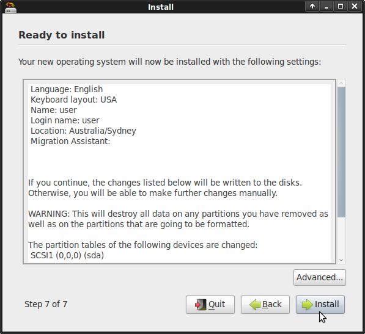

Installer OSGeoLive sur votre disque dur¶
OSGeoLive peut être installé sur votre disque dur, de la même manière qu’une distribution Ubuntu est installée.
Ce processus peut aussi être exécuté dans une machine virtuelle pour créer une machine virtuelle permanente OSGeoLive depuis un DVD ou une image ISO.
Prérequis système¶
- 20 GB d’espace disque disponible
Installer OSGeoLive¶

Sélectionnez Install RELEASE

Entrez le mot de passe « user »

Sélectionnez la langue

Sélectionnez un fuseau horaire

Sélectionnez le clavier

Spécifiez sur quel disque vous voulez faire l’installation. (Attention, cela peut supprimer une partition déja installée)

Les valeurs de configuration par défaut sont:

- Nom
- nom d’utilisateur = « user »
- mot de passe = « user »
- nom de l’ordinateur = « osgeolive »
- Connectez-vous automatiquement
{kind=link}
Sélectionnez Install
Allez prendre un tasse de café en attendant que l’installation s’effectue.
Et voilà, ça y est.
Astuce
Astuces d’installation: dans le cas où vous faites une installation avec un autre nom d’utilisateur que « user », les applications tomcat nécessitent la permission pour exécuter la commande du service comme décrit dans http://trac.osgeo.org/osgeo/ticket/1153